Перейти на главную страницу справочника.
Расчёт обмотки двухскоростного электродвигателя.
- Двухскоростные обмотки.
Самые распространенные многоскоростные обмотки асинхронных электродвигателей выполняются на две частоты вращения, т.е. двухскоростные. В двухскоростном электродвигателе может быть одна переключаемая двухслойная обмотка или состоящая из двух независимых обмоток на разную частоту вращения. Двухскоростная переключаемая обмотка обычно выполняется на кратные частоты вращения 1500/3000, 750/1500, 500/1000 об/мин. и имеет одну двухслойную обмотку, изменение оборотов достигается путем переключения полюсов. Электродвигатель с двумя независимыми обмотками может иметь разные частоты вращения 375/3000, 250/1000, 1000/1500 об/мин. и т. д. изменение оборотов достигается путем подключения к сети выводов одной или другой обмотки. При пересчете обмоточных данных двухскоростных электродвигателей с двумя независимыми обмотками соединение фаз выполняют только в звезду, рекомендуемое количество параллельных ветвей а=1.
- Трехскоростные обмотки.
Трехскоростные электродвигатели выполняются из одной переключаемой двухслойной обмотки с кратной частотой переключения и одной независимой. При пересчете обмоточных данных трехскоростных электродвигателей соединение фаз в независимой обмотке выполняют только в звезду, рекомендуемое количество параллельных ветвей а=1.
- Четырехскоростные обмотки.
В четырехскоростных электродвигателях две переключаемые двухскоростные обмотки с кратной частотой переключения или одна обмотка на четыре частоты вращения.
- Электродвигатель с полюснопереключаемой обмоткой может быть с постоянной мощностью или постоянным моментом.
Схемы электродвигателей с постоянной мощностью: Δ/YY, YY/Δ, Y/Y, Δ/Δ, YY/YY, ΔΔ/ΔΔ и т.д.
Схемы электродвигателей с постоянным моментом: Δ/ΔΔ, Y/YY, Y/Δ, YY/ΔΔ, YYY/ΔΔΔ и т.д.
- Обозначения выводов многоскоростных электродвигателей.
Вывода в многоскоростных электродвигателях обозначают следующим образом: число полюсов 2p, наименование вывода фазы. Пример: лифтовой электродвигатель с маркировкой выводов 18С1, 18С2, 18С3, 6С1, 6С2, 6С3, вывода с числом 18 принадлежат обмотке 333 об/мин., а вывода с числом 6 принадлежат обмотке 1000 об/мин.
Как пересчитать односкоростной электродвигатель в двухскоростной.
Перед пересчётом односкоростной обмотки на двухскоростную нужно:
- Проверить магнитную взаимосвязь между статором и ротором для новой частоты вращения. Во всех формулах неравенство должно соблюдаться.
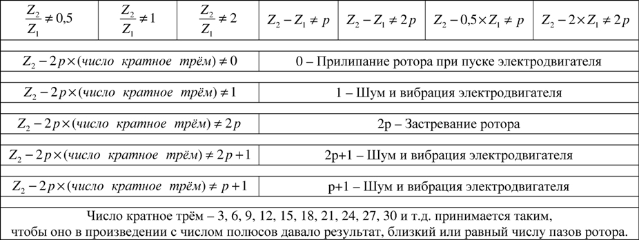
{kind=link}
- Проверить максимально допустимые обороты сердечника статора Di - внутренний диаметр сердечника статора в см, h - высота спинки статора в см. Не рекомендуется выполнять обмотку 3000 оборотов на сердечнике с допустимыми оборотами от 1500 и меньше.
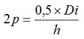
Данный способ расчета применяется если скорость односкоростного двигателя совпадает с высшей скоростью двухскоростного.
- Для примера возьмем двигатель 4A90L2 мощность 3,0 кВт. 3000 оборотов в минуту. Электродвигатель имеет следующие обмоточные данные: диаметр провода d=1,08, витков в пазу n=44, количество параллельных ветвей a=1, шаг обмотки по пазам у=11;9, количество пазов статора Z1=24.
- Односкоростную обмотку на 3000 оборотов возможно пересчитать в двухскоростную переключаемую 1500/3000 об/мин., для расчета возьмем типовую схему укладки двухскоростного двигателя с шагом у=7, количество пазов статора Z1=24 рисунок №1.
Рис. 1 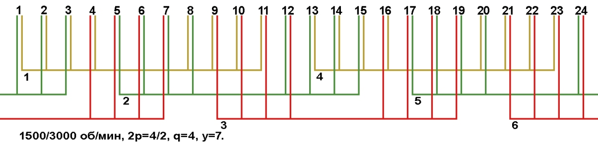
{kind=link}
- По условиям расчета требуется сохранить мощность электродвигателя 3,0 кВт. при 3000 оборотах, для данного расчёта воспользуемся схемой соединения фаз Y/YY, рисунок №2. По схеме на рисунке №2 видно, что при подаче напряжения на вывода 4С1;4С2;4С3 схема соединена в звезду и имеет одну параллельную ветвь a=1 с частотой вращения 1500 об/мин., при переключении на 3000 об/мин. напряжение подается на вывода 2С1;2С2;2С3 и устанавливается перемычка на вывода 4С1;4С2;4С3 схема соединена в звезду и имеет две параллельные ветви a=2. Так как по схеме соединений обмотка на 3000 об/мин. соединена в звезду и две параллельные ветви, обмоточные данные односкоростного электродвигателя пересчитываем на две параллельные ветви a=2. При увеличении количества параллельных ветвей, число проводников в пазу увеличивается, а сечение провода уменьшается в число раз параллельных ветвей. Сечение провода диаметром d=1,08 равно S=0,916, уменьшаем сечение в два раза 0,916/2=0,458 возможно использовать провод диаметром d=0,75. Увеличиваем количество витков в пазу n=44 в два раза 44×2=88. После пересчета получилось: диаметр провода d=0,75, количество витков в пазу n=88, так как переходим на двухслойную обмотку количество витков в секции n=44. Используя этот способ пересчета односкоростного электродвигателя в двухскоростной сохраняется мощность электродвигателя при 3000 об/мин.
{kind=link}
- При переходе с однослойной обмотки с диаметральным шагом на двухслойную с укороченным шагом, потребуется пересчёт числа витков в пазу и сечения провода.
Рис. 2 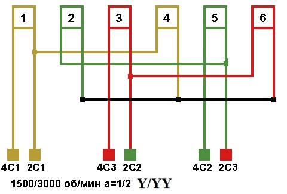
{kind=link}
Расчёт двухскоростной обмотки по сердечнику статора.
Расчёт двухскоростной обмотки по сердечнику статора, схема соединения фаз Δ/YY, с напряжением питания 380 вольт, частотой тока 50 герц.
- Число пазов на полюс и фазу двухскоростного электродвигателя. q - число пазов на полюс и фазу, Z1 - количество пазов статора, 2p - число полюсов при максимальных оборотах, m - количество фаз.

- Шаг обмотки по пазам двухскоростного электродвигателя. у - шаг обмотки, Z1 - количество пазов статора, 2p - число полюсов при минимальных оборотах.

- Число витков в пазу двухскоростного электродвигателя. 2p - число полюсов при минимальных оборотах, Z1 - количество пазов статора, L - длина сердечника статора в см, b - ширина зубца статора в см. Вz - магнитная индукция в зубцах статора. Для двигателей серии А Вz=1,6 Тл, для серий А2 Вz=1,75 Тл, для серий 4А Вz=1,85 Тл.
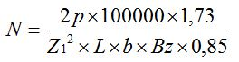
- Величина магнитной индукции в спинке статора при минимальных оборотах. Если магнитная индукция превысит 1,7 Тл, увеличить число витков в пазу. Z1 - количество пазов статора, L - длина сердечника статора в см, h - высота спинки статора в см, N - число витков в пазу, 0,85 - обмоточный коэффициент укорочения.
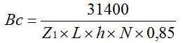
- Для проверки величины магнитной индукции в спинке статора при максимальных оборотах, следует рассчитать условное количество витков в пазу. N - число витков в пазу.
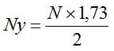
- Величина магнитной индукции в спинке статора при максимальных оборотах. Если магнитная индукция превысит 1,7 Тл, увеличить число витков в пазу. Z1 - количество пазов статора, L - длина сердечника статора в см, h - высота спинки статора в см, Nу - условное количество витков в пазу, 0,85 - обмоточный коэффициент укорочения.
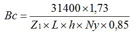
- Сечение провода двухскоростной обмотки. Nс - число витков в пазу старой обмотки, Sс - сечение провода старой обмотки, N - число витков в пазу по расчёту двухскоростного двигателя.
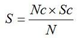
- Ток фазы при минимальных оборотах. S - сечение провода двухскоростной обмотки, j - плотность тока, выбирается в зависимости от мощности, оборотов и исполнения электродвигателя.
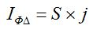
- Ток фазы при максимальных оборотах.
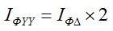
- Номинальный (линейный) ток при минимальных оборотах.
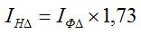
- Номинальный (линейный) ток при максимальных оборотах.
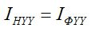
- Мощность при минимальных оборотах. Результат произведения коэффициентов мощности и полезного действия (cosφ×η), берётся из таблиц в зависимости от мощности и оборотов электродвигателя.
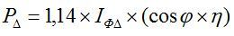
- Мощность при максимальных оборотах. Результат произведения коэффициентов мощности и полезного действия (cosφ×η), берётся из таблиц в зависимости от мощности и оборотов электродвигателя.
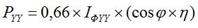
13.03.2012 г.
Литература по данной теме:
Девотченко Ф.С. "Замена обмотки многоскоростных электродвигателей." 1991 г.
Зимин В.И. Каплан М.Я. Палей А.М. Рабинович И.Н. Федоров В.П. Хаккен П.А. "Обмотки электрических машин." 1976 г.
Харитонов А.М. "Многоскоростные двигатели в промышленных электроприводах." 1971 г.